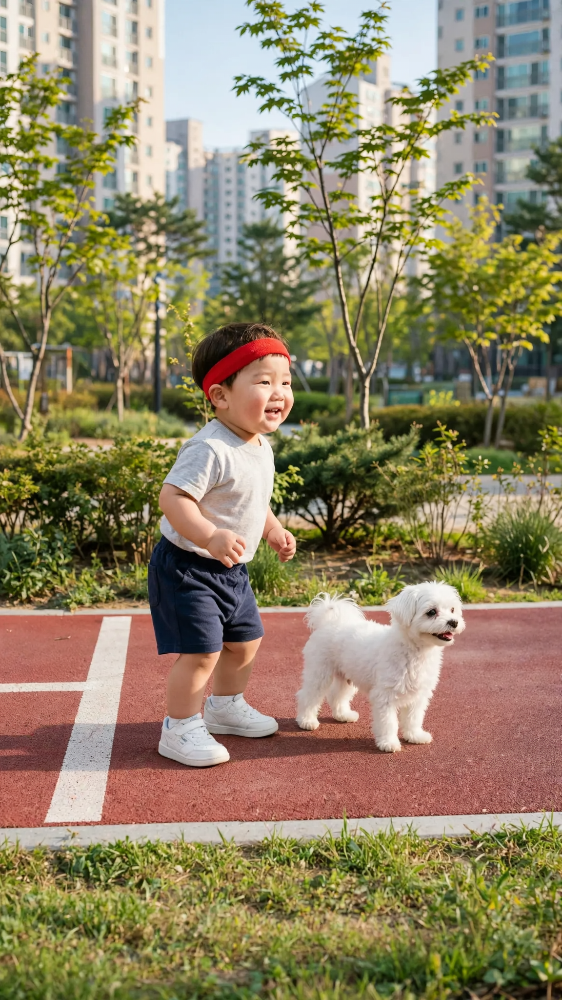
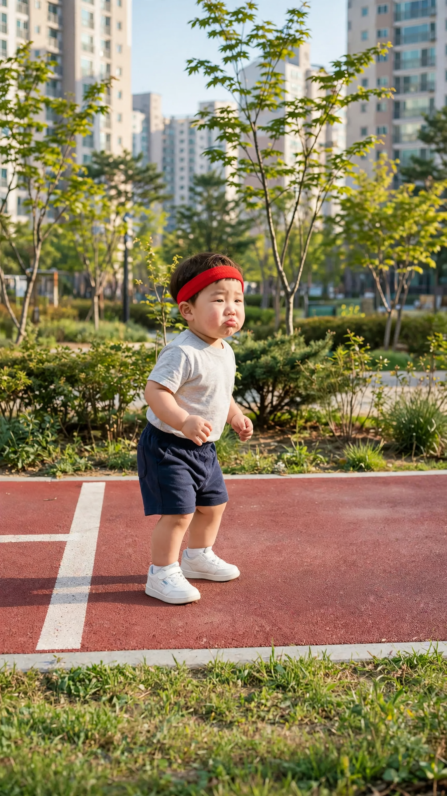
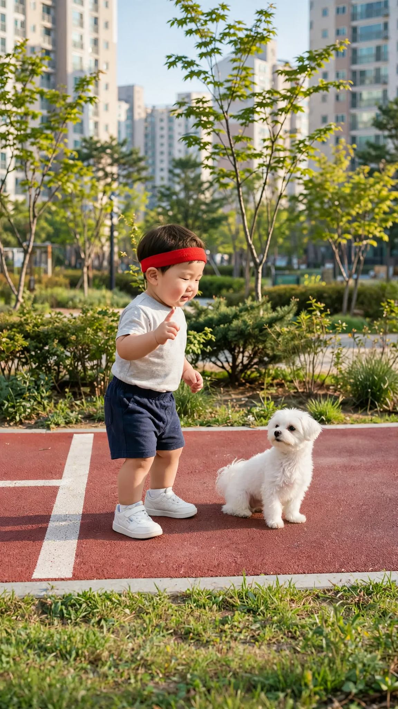
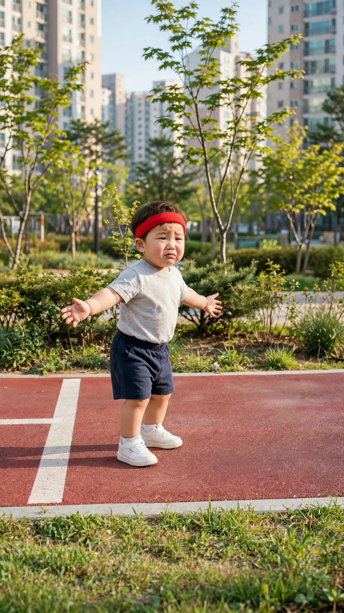
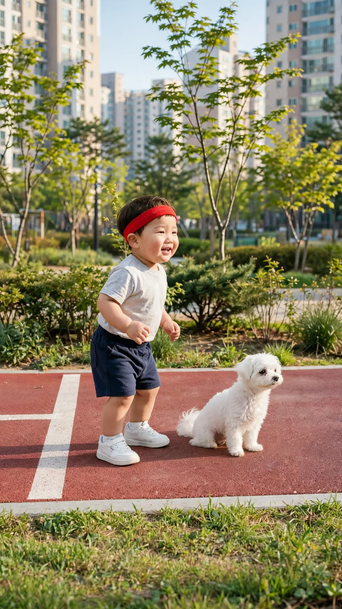

🎬 콩이와 달리기 시합
5컷 · 28초 · 🟦 표시 컷은 도윤이 입 다묾 · 실패하면 같은 걸로 2~3번 다시 걸기
1번 컷
⏱ 6초🟦 엄마(화면 밖): 「시작!」


[Character Action & Continuity] Realistic Korean slice-of-life short video clip. a jogging path in a Korean apartment complex park, seen from the side in Korea. Maintain exact appearance from start frame: a 24-month-old Korean toddler boy wearing a light gray short-sleeve t-shirt, navy shorts, small white sneakers and a red sports headband. Scale: a small 24-month-old toddler build with natural proportions. Fixed positions: Start line on the left; they run only along the red path, straight to the right edge. Doyoon stays silent with a sulky pout; only the off-screen mother speaks. [0-1s] Doyoon and Kongi wait at the start line [1-4s] Doyoon and Kongi run along the path; Kongi zooms out of the right edge [4-6s] Doyoon slows down mid-path [Dialogue Script & Emotion] 엄마(화면 밖), 0초부터 바로: (밝고 신나게 출발 신호를 주듯) "시작!" [Audio & Voice Specifications] Single Voice Track Only: One off-screen Korean woman in her early 30s, the boy's mother, speaking from outside the frame in a calm, warm, matter-of-fact voice. Sound Format: One off-screen adult woman voice in a quiet room. Background Sound: Quiet indoor room tone. Continuous steady indoor room air. [Technical Directives] 카메라: 옆에서 본 산책로. 카메라 고정. 화면: 도윤이와 방만 보인다. 벽과 가구 표면은 무늬 없이 비어 있다. 말소리는 화면 밖 엄마 목소리 하나, 도윤이는 입을 다문다.
2번 컷
⏱ 4초도윤: 「다시 해!」


[Character Action & Continuity] Realistic Korean slice-of-life short video clip. a jogging path in a Korean apartment complex park, seen from the side in Korea. Maintain exact appearance from start frame: a 24-month-old Korean toddler boy wearing a light gray short-sleeve t-shirt, navy shorts, small white sneakers and a red sports headband. Scale: a small 24-month-old toddler build with natural proportions. Fixed positions: Start line on the left; they run only along the red path, straight to the right edge. [0-2s] Doyoon turns his face to the camera and says his line right away with a pout [2-4s] Doyoon puffs his cheeks and stomps one foot [Dialogue Script & Emotion] 도윤 (단독 발화, 0초부터 바로): (분하다는 듯 입을 삐죽 내밀고) "다시 해!" [Audio & Voice Specifications] Single Voice Track Only: Definite 18 to 24-month-old Korean INFANT TODDLER boy voice. Low-pitched, cute, raspy little boy toddler voice. Strictly NOT a school-age child, NOT female. Sound Format: Solo toddler voice in a quiet room. Background Sound: Quiet indoor room tone. Continuous steady indoor room air. [Technical Directives] 카메라: 옆에서 본 산책로. 카메라 고정. 화면: 도윤이와 방만 보인다. 벽과 가구 표면은 무늬 없이 비어 있다. 도윤이 입모양 100% 완벽 립싱크.
3번 컷
⏱ 6초도윤: 「콩이야, 도윤이가 시작하면 뛰는 거야.」


[Character Action & Continuity] Realistic Korean slice-of-life short video clip. a jogging path in a Korean apartment complex park, seen from the side in Korea. Maintain exact appearance from start frame: a 24-month-old Korean toddler boy wearing a light gray short-sleeve t-shirt, navy shorts, small white sneakers and a red sports headband. Scale: a small 24-month-old toddler build with natural proportions. Fixed positions: Start line on the left; they run only along the red path, straight to the right edge. [0-3s] Doyoon looks at Kongi and says his line right away, one finger raised [3-4s] Doyoon takes one full step forward along the path [4-6s] Kongi springs off and leaves the right edge before his second step; Doyoon freezes [Dialogue Script & Emotion] 도윤 (단독 발화, 0초부터 바로): (코치처럼 진지하게 가르치듯) "콩이야, 도유니가 시작하면 뛰는 거야." [Audio & Voice Specifications] Single Voice Track Only: Definite 18 to 24-month-old Korean INFANT TODDLER boy voice. Low-pitched, cute, raspy little boy toddler voice. Strictly NOT a school-age child, NOT female. Sound Format: Solo toddler voice in a quiet room. Background Sound: Quiet indoor room tone. Continuous steady indoor room air. [Technical Directives] 카메라: 옆에서 본 산책로. 카메라 고정. 화면: 도윤이와 방만 보인다. 벽과 가구 표면은 무늬 없이 비어 있다. 도윤이 입모양 100% 완벽 립싱크.
4번 컷
⏱ 4초도윤: 「콩이 시작 안 했는데 뛰었어.」


[Character Action & Continuity] Realistic Korean slice-of-life short video clip. a jogging path in a Korean apartment complex park, seen from the side in Korea. Maintain exact appearance from start frame: a 24-month-old Korean toddler boy wearing a light gray short-sleeve t-shirt, navy shorts, small white sneakers and a red sports headband. Scale: a small 24-month-old toddler build with natural proportions. Fixed positions: Start line on the left; they run only along the red path, straight to the right edge. [0-3s] Doyoon spreads his arms and says his line right away with a wronged face [3-4s] Doyoon drops his arms and pouts [Dialogue Script & Emotion] 도윤 (단독 발화, 0초부터 바로): (억울하다는 표정으로 하소연하듯) "콩이 시작 안 했는데 뛰었떠." [Audio & Voice Specifications] Single Voice Track Only: Definite 18 to 24-month-old Korean INFANT TODDLER boy voice. Low-pitched, cute, raspy little boy toddler voice. Strictly NOT a school-age child, NOT female. Sound Format: Solo toddler voice in a quiet room. Background Sound: Quiet indoor room tone. Continuous steady indoor room air. [Technical Directives] 카메라: 옆에서 본 산책로. 카메라 고정. 화면: 도윤이와 방만 보인다. 벽과 가구 표면은 무늬 없이 비어 있다. 도윤이 입모양 100% 완벽 립싱크.
5번 컷
⏱ 8초도윤: 「콩이야 시작! 이제 뛰어도 돼.」


[Character Action & Continuity] Realistic Korean slice-of-life short video clip. a jogging path in a Korean apartment complex park, seen from the side in Korea. Maintain exact appearance from start frame: a 24-month-old Korean toddler boy wearing a light gray short-sleeve t-shirt, navy shorts, small white sneakers and a red sports headband. Scale: a small 24-month-old toddler build with natural proportions. Fixed positions: Start line on the left; they run only along the red path, straight to the right edge. [0-3s] Doyoon runs along the path and out of the right edge; Kongi stays sitting [3-6s] Doyoon peeks back in at the right edge, face to the camera, and shouts his line to Kongi [6-8s] Kongi looks straight at the camera and tilts its head, puzzled [Dialogue Script & Emotion] 도윤 (단독 발화, 3초에): (저 멀리서 신나게 외치듯) "콩이야 시작! 이제 뛰어도 돼." [Audio & Voice Specifications] Single Voice Track Only: Definite 18 to 24-month-old Korean INFANT TODDLER boy voice. Low-pitched, cute, raspy little boy toddler voice. Strictly NOT a school-age child, NOT female. Sound Format: Solo toddler voice in a quiet room. Background Sound: Quiet indoor room tone. Continuous steady indoor room air. [Technical Directives] 카메라: 옆에서 본 산책로. 카메라 고정. 화면: 도윤이와 방만 보인다. 벽과 가구 표면은 무늬 없이 비어 있다. 도윤이 입모양 100% 완벽 립싱크.